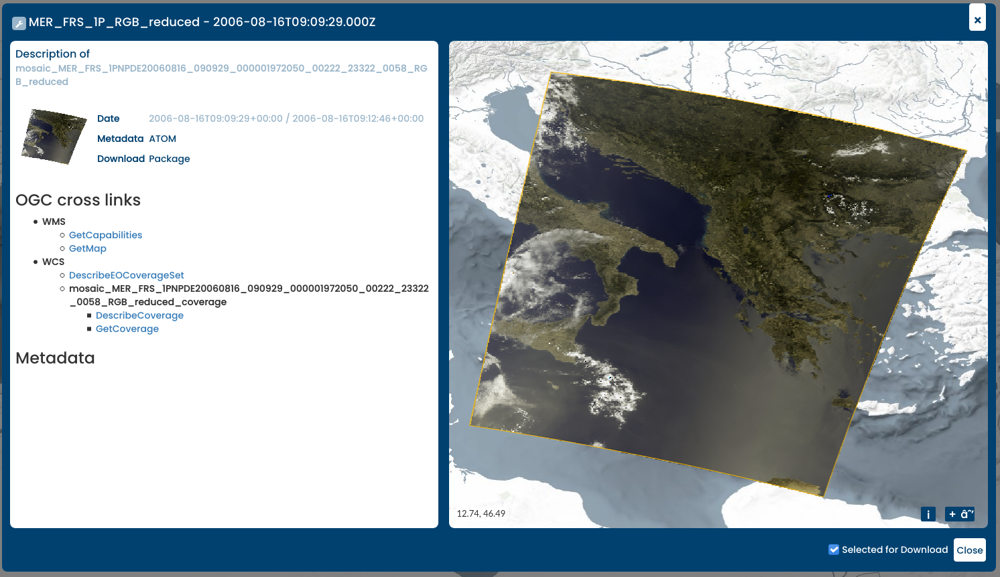

EOxServer gyorstalpaló¶
EOxServer is a server for presenting big Earth Observation (EO) data archives and metadata via Open Standards. It builds upon an Open Source stack of software which includes Python, MapServer, Django/GeoDjango, GDAL, PROJ and a SpatiaLite or PostGIS database.
Ez a gyorstalpaló leírja:
- Használja a Web klienst az EO adatok megjelenítéséhez, szűréséhez, részhalmaz képzéséhez és letöltéséhez
- Használja az Admin klienst az EO adat archívumok megtekintéséhez
EOxServer indítás¶
Válassza -t a menüből. Ez elindítja a böngészőt, mely a http://localhost/eoxserver/ címen elérhető bemutató példányt mutatja.

Munka a Web klienssel¶
Kattintson a Web Client linkre az integrált EOxServer kliens megnyitásához.
Ebben a kliensben felfedezheti a EOxServer példány tartalmát. A bemutató példányt ENVISAT MERIS helyszínekkel töltötték fel.

The client consists of the map view and widgets that contain the main interactions. The main area is the map widget of the client with a set of datasets already displayed. On the bottom, you’ll find the timeslider widget, that allows you to explore the contents in the temporal dimension.

The Layer Selection widget can be expanded by clicking the cogwheel on the top left and it allows you to enable or disable the visibility and configure the rendering of the layers. Also, you can show or hide the streets-overlay and select the background layer. The Filters tab in this widget enables querying for different spatial and temporal values.

A térképhez hasonlóan nagyíthatja és eltolhatja az aktuálisan látható időt és kiválaszthat egy időpontot a piros pontokat tartalmazó területen rajzolva. Egy pontra mozogva láthatja az adatállomány azonosítóját. A pontra kattintva a térkép automatikusan az adatállomány terjedelmére nagyít.

When a spatial filter is enabled, you can draw a bounding box, polygon or point directly on the map. The drawn feature is used for querying within the Download Tool.
{kind=link}
You can get more information of available services and metadata on the selected product by hovering on the product in the search results widget and clicking on the icon in the top right.

Amikor a Download Tool-t bekapcsolja egy lekérdezést küldünk a szervernek. Ez a lekérdezés tartalmazza a kiválasztott időpontot és a befoglaló téglalapot. Az eredmények megjelennek a Download vezérlőben, ahol kiválaszthatja a formátumot, a vetületet és a letöltendő adatállományokat.
Ez a EOxServer Web kliens rövid bemutatása volt. További információkért kérjük forduljon az online dokumentációhoz.
Munka az Admin klienssel¶
Az EOxServer fő oldalán kattintson az Admin Client linkre és jelentkezzen be az admin felhasználónévvel és admin jelszóval.

Az Admin Client egy Django szabványos admin és az elérhető adatok konfigurálását teszi lehetővé. Kérjük, nyugodtan fedezze fel a klienst. További információ található az operators» kézikönyvben.

For example, you can inspect the collection that is loaded by default by clicking the „Collections” link and then the „MER_FRS_1P_RGB_reduced” link.

You can preview the coverages by going back and clicking on the „Coverages” link.

Mi következik?¶
Ez egy egyszerű bemutató, de sokkal többet csinálhat az EOxServerrel. A projekt honlapja rengeteg forrást tartalmaz az elinduláshoz. Itt van néhány legközelebb megtekintendő forrás:
- További információkért lásd a EOxServer összefoglalót.
- Olvassa el az EOxServer Operators» kézikönyvet.
- Read the EOxServer Basics.
- Készen áll a EOxServer használatára? Az elképzelések megosztásához, a lehetséges szoftver fejlesztések megbeszéléséhez és kérdések feltételéhez csatlakozzon a közösséghez a levelező listákon.